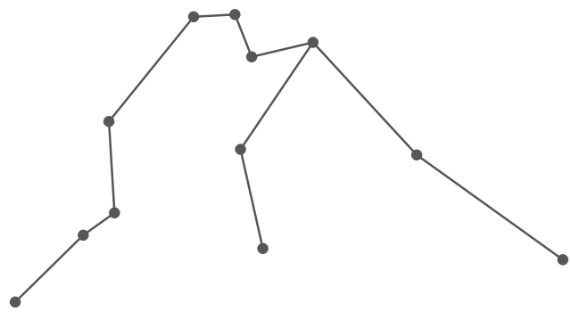

Star Constellation for Aquarius
Element: Air
Aquarius Symbol

Aquarians are archetypical outcasts. This doesn’t mean they’re loners. In fact, they thrive in large groups—charming you with their peculiar senses of humor, intriguing you with fun facts about the history of disposable straws, or convincing you to join their reading group. The alienation they feel is often self-imposed—a result of their knee-jerk contrarianism, rather than a lack of social intelligence. They try to be weird. They hang grapefruit rinds from the wall and call it art, they pretend to actually like noise music, they saturate their internal monologues with SAT words.
“Intelligence,” to them, means the ability to formulate the most unpopular opinion possible. If they were white sheep, they’d dye their wool black just to prove a point. They are destined to live their lives in direct opposition to the current world. In fact, they are world-builders. An entire universe exists in their heads, and this universe adheres to its own set of logic that doesn’t map onto reality. They are not liars. They are utopians. They are not cold. They are rational. To them, emotions are just holes in their idealistic vessels. Why succumb to sensitivity when there is so much knowledge to acquire, so many problems to be solved, worlds to invent?
They sometimes ask, “Why can’t I be normal?” but in reality, they find normalcy boring, and they stake their self worth on their ability to be interesting. They want to be unknowable. They want to evade definition. Definitions are binding little rules that other people use to restrict their movement, and they must resist anything that infringes on their freedom to drift. Between definitions, between the individual and the common, between themselves and humanity. The ultimate Aquarian struggle is resolving the tension between their need for community, and their need for complete detachment.
Aquarians are always running little tests. They live their lives as one big science experiment, using the element of surprise to collect reactions and construct theories about the intricacies of human nature. They are walking abstract art pieces, shattering traditional perspectives with their complete disregard for convention. They are martyrs to the cause of “humanity”, and “freedom” is their only demand.
Complimentary Signs to Aquarius: